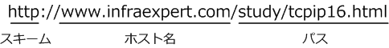
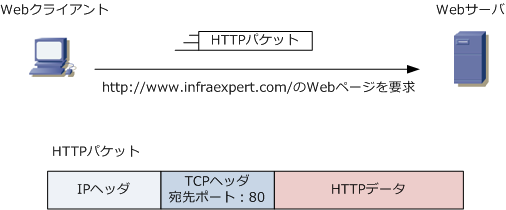
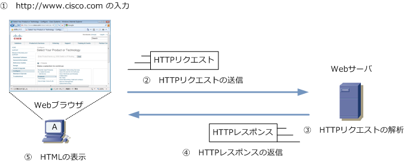
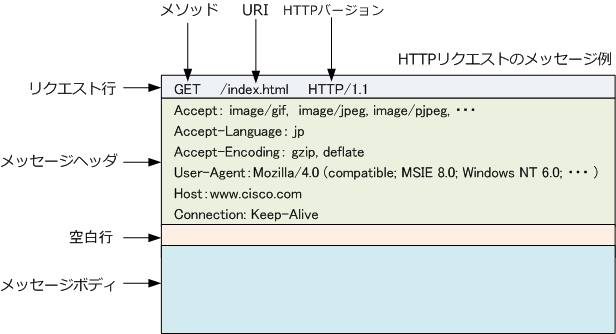
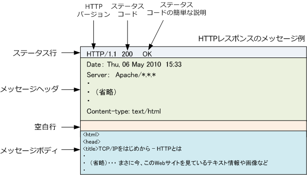

HTTP
HTTPとは
HTTP (HyperText Transfer Protocol) は、WebサーバとクライアントのWebブラウザがデータを送受信 するために使用するアプリケーション層のプロトコルです。HTTPにより、Webページを記述するために 使用する言語（HTML）による文書、画像、音声、動画等のファイルを表現形式を含めてやりとりできます。
URLの構造
Webアクセスのためには、WebブラウザでURL(Uniform Resource Locators)を指定する必要があります。 インターネット上の資源の場所を示す URL は以下の書式で記述します。大きく3つの構成要素があります。

| URLの構成 | 説明 |
|---|---|
| スキーム | アクセスするプロトコルを指定する部分。HTTPによるWebアクセスを行うためには「 http 」と入力。 HTTPにSSLを使用した暗号化によるWebアクセスを行うためには「 https 」と入力。ポート番号443。 例えば、WebブラウザでFTPサーバにアクセスしたい場合は「ftp」 と入力する。 |
| ホスト名 | アクセスするホスト名を指定する部分。DNSではFQDNと呼ばれている部分。 ホスト名の後にポート番号を指定することができる。ポート番号を省略した場合はデフォルトで 「http」 でアクセスする場合ポート番号に「80」を使用する。つまり、以下の入力結果は同じ意味。 「 http://www.infraexpert.com/ 」 ＝ 「 http://www.infraexpert.com:80/ 」 |
| パス | Webブラウザで表示させたいWebページのファイル名を指定する部分。ファイル名を指定しない場合 デフォルトで「index.html」のファイル名が呼び出される。つまり以下は同じWebページが表示される。 「 http://www.infraexpert.com/ 」 ＝ 「 http://www.infraexpert.com/index.html 」 |
※ 当サイトのURLを「 http://～ 」で入力しても、「https://～」にリダイレクトさせるようにWebサーバで設定しています。
HTTPのパケット
HTTPはTCPプロトコル上で動作しており、Webサーバにアクセスするために使用しているポート番号は80。

Webアクセスの仕組み
HTTPはとてもシンプルなプロトコル。HTTPでは、データを要求するHTTPリクエストとそれに応答して 要求されたデータを送り返すHTTPレスポンスの2つのやりとりを繰り返してWebページを表示しています。

| シーケンス | 説明 |
|---|---|
| ?@ | 利用者がWebブラウザにURLを入力してEnterキーを押す。 |
| ?A | Webブラウザは指定したWebサーバにHTTPリクエストを送信して、Webページのデータを要求。 |
| ?B | Webサーバは、Webブラウザから受信したHTTPリクエストを解析。 |
| ?C | Webサーバが、Webブラウザに要求されたデータをHTTPレスポンスとして返信。 |
| ?D | Webブラウザは、受信したデータを解析してWebページとして表示。 |
HTTPのバージョン
HTTPのバージョンには3つのバージョンがありますが、HTTP/2とHTTP/3ともに広く普及しつつあります。
| HTTPバージョン | 派生元 | RFC | 導入年 |
|---|---|---|---|
| HTTP/1.1（ HTTPバージョン1.1 ） | - | RFC 9112 | 1997年 |
| HTTP/2（ HTTPバージョン2 ） | SPDY | RFC 9113 | 2015年 |
| HTTP/3（ HTTPバージョン3 ） | QUIC | RFC 9114 | 2022年 |
HTTP/1.1では、HTTPリクエストとレスポンスをやり取りするごとに、TCPコネクションを切断しますが、 HTTP/2では、1つのTCPコネクション上で複数のHTTPリクエストとHTTPレスポンスをやりとりできます。 複数のHTTPリクエストを同時に処理できるので、HTTP/2の方がウェブページの読み込みが早くなります。
HTTPリクエストメッセージ
HTTPリクエストのメッセージはリクエスト行、メッセージヘッダ、空白行、メッセージボディで構成。

| HTTPリクエストの構成 | 説明 |
|---|---|
| リクエスト行 | Webサーバに要求する情報を示す。メソッド、URI、HTTPバージョンの情報がある。 メソッドとはWebサーバに要求を示すコマンドのこと。URIとはリクエストの対象となるデータ を指す情報のこと。HTTPバージョンとは、Webブラウザがサポートするバージョンのこと。 |
| メッセージヘッダ | WebサーバにWebブラウザの情報を示す。具体的に、Webブラウザ側でサポートする データのタイプ、データの圧縮方法、ブラウザの種類などの情報がある。 |
| 空白行 | Webサーバにメッセージヘッダーの終わりを伝えるために使用する。 |
| メッセージボディ | Webサーバにデータを送るために使用する。例えば、Webページ上で入力欄がある場合 そこに入力したテキスト情報をWebサーバに送るために使用。入力情報がなければ空白。 |
リクエスト行にあるメソッドには主に以下のようなものがあります。とても重要な内容です。
| メソッドの種類 | 説明 |
|---|---|
| GET | データを取得することをWebサーバに要求 |
| HEAD | データそのものは要求せず、メッセージヘッダだけを取得することをWebサーバに要求 |
| POST | Webサーバに、データを送信 |
| PUT | Webサーバに、ファイルをアップロード |
| DELETE | Webサーバ上にあるデータを削除することを要求 |
| CONNECT | 例えばプロキシサーバなどに、トンネルの確立を要求 |
HTTPレスポンスメッセージ
HTTPレスポンスのメッセージはステータス行、メッセージヘッダ、空白行、メッセージボディで構成。

| HTTPレスポンスの構成 | 説明 |
|---|---|
| ステータス行 | Webブラウザに、Webサーバでの処理結果を伝える。 HTTPのバージョン、ステータスコード、説明文などの情報がある。 |
| メッセージヘッダ | WebブラウザにWebサーバの情報を示す。具体的に、サーバの種類 返信するデータのタイプ、データの圧縮方法などの情報がある。 |
| 空白行 | Webブラウザにメッセージヘッダーの終わりを伝えるために使用する。 |
| メッセージボディ | HTML文書、画像ファイル、動画ファイルなどのデータを格納するために使用する。 |
ステータス行にあるステータスコードは多くの種類があり、ステータスコードの番号帯により以下の通り 内容によって、5つ（情報、成功、リダイレクト、クライアントエラー、サーバエラー）に分類できます。
| ステータス コード |
説明 | ステータスコード例 |
|---|---|---|
| 100番台 | 情報 続きの情報があることを伝える。 |
100 ( Continue ) 続きの情報があるのでリクエストして！ |
| 200番台 | 成功 Webサーバがリクエストに処理できたことを伝える。 |
200 ( OK ) リクエストを無事に処理した！ |
| 300番台 | リダイレクト 別のURLへリクエストし直すように要求する。 |
301 ( Moved Permanently ) |
| 400番台 | クライアントエラー クライアントのリクエストに問題があり処理できなかった事を伝える。 |
404 ( Not Found ) 指定したURLのデータは存在しない！ |
| 500番台 | サーバエラー サーバ側に問題があり処理できなかったことを伝える。 |
503 ( Service Unavailable ) サーバの負荷が高くて処理できない！ |
| 詳細なステータスコード | 説明 | 結果フレーズ |
|---|---|---|
| 100 | 情報 ( Informational ) | Continue |
| 101 | 情報 ( Informational ) | Switching Protocols |
| 102 | 情報 ( Informational ) | Processing |
| 200 | 成功 ( Success ) | OK |
| 201 | 成功 ( Success ) | Created |
| 202 | 成功 ( Success ) | Accepted |
| 203 | 成功 ( Success ) | Non-Authoritative Information |
| 204 | 成功 ( Success ) | No Content |
| 205 | 成功 ( Success ) | Reset Content |
| 206 | 成功 ( Success ) | Partial Content |
| 207 | 成功 ( Success ) | Multi-Status |
| 226 | 成功 ( Success ) | IM Used |
| 300 | リダイレクト ( Redirect ) | Multiple Choices |
| 301 | リダイレクト ( Redirect ) | Moved Permanently |
| 302 | リダイレクト ( Redirect ) | Found |
| 303 | リダイレクト ( Redirect ) | See Other |
| 304 | リダイレクト ( Redirect ) | Not Modified |
| 305 | リダイレクト ( Redirect ) | Use Proxy |
| 306 | リダイレクト ( Redirect ) | (Unused) |
| 307 | リダイレクト ( Redirect ) | Temporary Redirect |
| 400 | クライアントエラー ( Client Error ) | Bad Request |
| 401 | クライアントエラー ( Client Error ) | Unauthorized |
| 402 | クライアントエラー ( Client Error ) | Payment Required |
| 403 | クライアントエラー ( Client Error ) | Forrbidden |
| 404 | クライアントエラー ( Client Error ) | Not Found |
| 405 | クライアントエラー ( Client Error ) | Method Not Allowed |
| 406 | クライアントエラー ( Client Error ) | Not Acceptable |
| 407 | クライアントエラー ( Client Error ) | Proxy Authentication Required |
| 408 | クライアントエラー ( Client Error ) | Request Timeout |
| 409 | クライアントエラー ( Client Error ) | Conflict |
| 410 | クライアントエラー ( Client Error ) | Gone |
| 411 | クライアントエラー ( Client Error ) | Length Required |
| 412 | クライアントエラー ( Client Error ) | Precondition Failed |
| 413 | クライアントエラー ( Client Error ) | Request Entity Too Large |
| 414 | クライアントエラー ( Client Error ) | Request-URI Too Long |
| 415 | クライアントエラー ( Client Error ) | Unsupported Media Type |
| 416 | クライアントエラー ( Client Error ) | Requested Range Not Satisfiable |
| 417 | クライアントエラー ( Client Error ) | Expectation Failed |
| 418 | クライアントエラー ( Client Error ) | I'm a teapot |
| 422 | クライアントエラー ( Client Error ) | Unprocessable Entity |
| 423 | クライアントエラー ( Client Error ) | Locked |
| 424 | クライアントエラー ( Client Error ) | Failed Dependency |
| 426 | クライアントエラー ( Client Error ) | Upgrade Required |
| 500 | サーバエラー ( Server Error ) | Internal Server Error |
| 501 | サーバエラー ( Server Error ) | Not Implemented |
| 502 | サーバエラー ( Server Error ) | Bad Gateway |
| 503 | サーバエラー ( Server Error ) | Service Unavailable |
| 504 | サーバエラー ( Server Error ) | Gateway Timeout |
| 505 | サーバエラー ( Server Error ) | HTTP Version Not Supported |
| 506 | サーバエラー ( Server Error ) | Variant Also Negotiates |
| 507 | サーバエラー ( Server Error ) | Insufficient Storage |
| 509 | サーバエラー ( Server Error ) | Bandwidth Limit Exceeded |
| 510 | サーバエラー ( Server Error ) | Not Extended |
← DNSとは SMTP/POPとは →